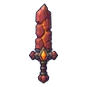

โกเลมหินแดง
มอนธาตุไม่มีธาตุ Lv 57–78
เจอที่
| แมพ | โซน | Lv | ภูมิภาค |
|---|---|---|---|
| ผาหินแดง | 66–72 | แดนใต้สีแดง | |
| รางร่อนทองร้าง | 57–78 | แดนใต้สีแดง | |
| รางร่อนทองร้าง | รางน้ำไม้ยักษ์ | 71–78 | แดนใต้สีแดง |
| หุบเสาหินทราย | 57–78 | แดนใต้สีแดง | |
| หุบเสาหินทราย | ดงเสาหินทราย | 71–78 | แดนใต้สีแดง |
ค่าสถานะตามเลเวล
| Lv | HP | ATK | DEF | MDEF | EXP | Job |
|---|---|---|---|---|---|---|
| 57 | 28,388 | 137–205 | 36 | 10 | 89 | 67 |
| 67 | 44,712 | 164–246 | 43 | 12 | 103 | 77 |
| 78 | 68,796 | 198–297 | 50 | 14 | 118 | 89 |
ตีด้วยธาตุไหนดี
แรงขึ้น: —
เบาลง: วิญญาณ ×0.25
วัตถุดิบที่ดรอป
| ของ | โอกาส | |
|---|---|---|
| ผลึกแกนโกเลม | 50% | 1 ชิ้น (15% ได้ 2) |
อุปกรณ์ที่ดรอป (11)
| ของ | โอกาส |
|---|---|
| 0.25% | |
 ดาบใหญ่หินแดง | 0.25% |
| 0.25% | |
| 0.25% | |
| 0.12% | |
| 0.12% | |
| 0.06% | |
| 0.06% | |
| 0.06% | |
| 0.06% | |
| 0.06% |
สกิล
ร่างแข็ง (Lv 25+) · ร่างแข็ง (Lv 60+) · ทุบพื้น (Lv 60+)